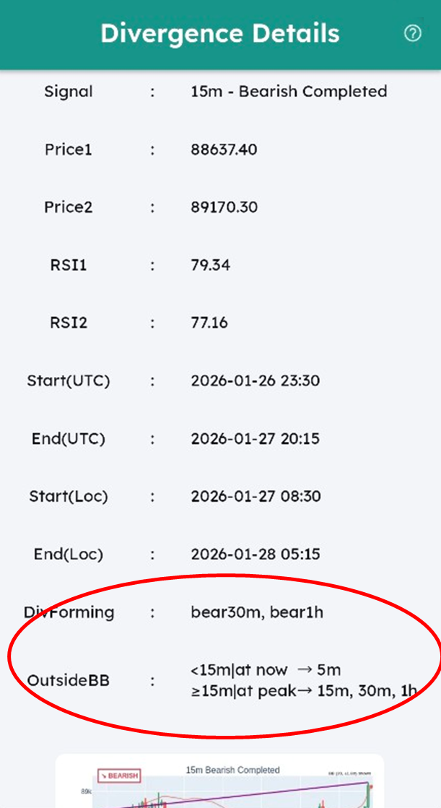
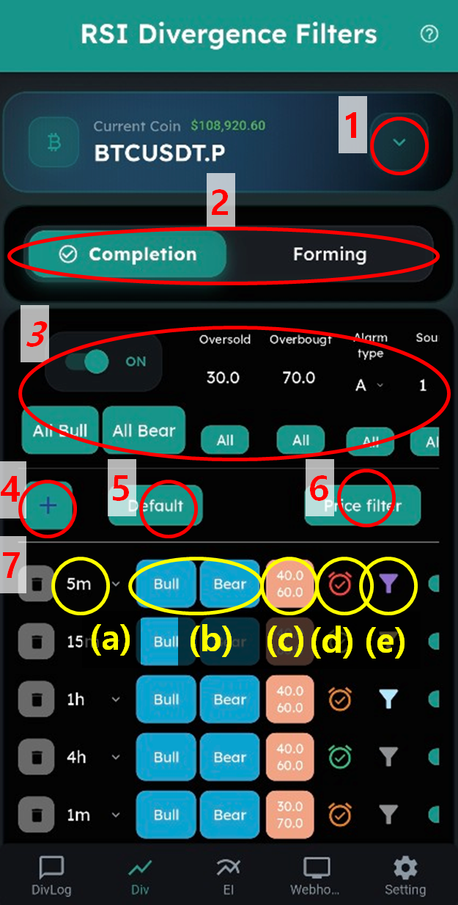

DivAlarm 用户手册
使用本指南配置 RSI 背离警报、Webhook 功能、额外指标、邀请奖励以及应用核心设置。
📊 查看信号通知（“DivLog”）
“DivLog”是你接收背离报警信号的地方。
- 最多保存 150 条信号。请定期清理。
- 显示未查看的报警。勾选标记即可消除报警。最多显示最近 5 条未查看报警。
- 筛选只查看你想看的信号。
🔍 查看信号详情

点击每条报警即可查看详细的信号信息。
对于 RSI 背离报警，你可以看到起始/结束价格、RSI 数值以及时间戳。
“DivForming” 显示信号触发时，其他周期正在形成的背离。
“OutsideBB” 显示信号触发时，哪些周期处于布林带之外。
- 对于比信号周期更小的周期，显示信号触发当下（at now）哪些 K 线在布林带之外。
- 对于比信号周期更大的周期，显示在之后的 RSI 背离峰值（at peak）时，哪些 K 线在布林带之外。
示例
在上面的示例中，15m 周期出现了一个看涨信号。
“DivForming” 表示在 30m 和 1h 周期正在形成看跌背离。
“OutsideBB” 显示：
- 在信号触发当下，5m 周期处于布林带之外。
- 在 RSI 背离峰值时，15m、30m 和 1h 周期处于布林带之外。
⚙️ RSI 背离报警设置（“Div”）

整体 RSI 背离设置
- 选择要配置的币种。
- 在“RSI 背离完成”和“RSI 背离形成中”信号之间选择。
- 批量设置区域 — 一次性将设置应用到下方所有项目。
- 点击 + 按钮添加背离筛选条件。
- 将筛选条件重置为推荐的默认设置。
- 批量设置价格条件。
单个筛选条件设置
- Configure individual RSI divergence signals to receive:
(a) 选择所需周期。对于“RSI 背离形成中”，需要同时选择“主周期”和“子周期”。当主周期背离正在形成时，较小周期形成 RSI 峰值（价格反转）即触发报警。
(b) 选择信号：“Bull（看涨）”或“Bear（看跌）”。蓝色 = 已开启报警，灰色 = 已关闭。
(c) 设置超卖/超买阈值。当“起点 RSI”低于超卖水平时触发看涨提醒；当“起点 RSI”高于超买水平时触发看跌提醒。
(d) 配置提醒类型与声音。详细设置在“设置”页面：
A 强制提醒（循环）— 持续播放直到手动停止，忽略静音模式
B 强制提醒（一次）— 播放一次，忽略静音模式
C 跟随手机设置 — 使用设备的常规声音设置
D 仅震动 — 只震动不发声
E 静音模式 — 无声音也无震动
(e) 仅为更有用的信号设置附加条件：价格条件、其他周期 RSI 形成条件、布林带条件。


e0) 当设置了多个条件时，配置它们的关系：“且”（全部满足）或“或”（满足任意一个）。
e1) 设置价格条件 — 当背离起点/终点价格高于或低于指定价格时提醒。
e2) 当其他周期正在形成背离时提醒。
e3) 检查 RSI 背离最终峰值价格是否在布林带之外。
策略建议
- 务必结合其他指标：阻力位、趋势线、斐波那契等。
- 和所有指标一样，RSI 背离并非 100% 准确——它提升的是胜率。
- 1m、5m 背离常被忽略，但可靠性会随周期增大而提升：15m < 1h < 4h。4h 背离可靠性很高——建议设置为 A 级提醒。
📈 额外指标提醒（“EI”）


- 选择要配置的币种。
- 为该币种设置价格提醒。
- 配置 EMA（指数移动平均线）交叉提醒。
- 设置支撑/阻力接近提醒。
- 配置布林带突破提醒。
- 设置 Supertrend 变更提醒。
※ 额外指标（3、4、5、6）在你退出登录后会重置。
⚙️ 设置页面


- 配置提醒类型（A、B…）和提醒声音（1、2…）。
- 如需自动下单，请填写各交易所的 API Key。
- 你可以测试通知是否能送达当前手机。给自己发送一条测试消息，即可检查提醒是否会按你配置的筛选条件正常推送。
- 这是用于设置邀请返佣相关选项的页面。
- 这是接收全站公告的地方。
- 这是接收你注册时填写的推荐人发送的专属公告的地方。
- 你可以在浅色模式与深色模式之间切换整个应用。
💰 邀请返佣

(a) 你的邀请码。其他人使用该码订阅后，你将成为其推荐人。
(b) 你的邀请链接。任何人通过该链接订阅，都会自动将你登记为推荐人。
(c) 填写用于接收邀请返佣的钱包地址。必须为 BEP-20 USDT 钱包（建议使用主流交易所钱包）。你可以在 DivAlarm 网站的“我的信息”中测试充值是否正常。
(d) 显示你的返佣状态：当前邀请人数、预计返佣金额、已确认金额、已支付金额。
返佣将在被邀请用户完成订阅付款（不含免费试用）后的 14 天，从“预计”转为“已确认”。返佣每周二 UTC 00:00 统一发放。
年度订阅推荐：每成功推荐一位用户可获得 25 USDT。
如何获得邀请返佣
1] 前往 设置 → 邀请返佣 → 填写返佣钱包地址。
2] 分享你的邀请链接。对方将带着你的邀请码进入订阅页面。
3] 对方订阅并完成付款后，返佣将入账。